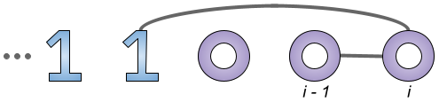
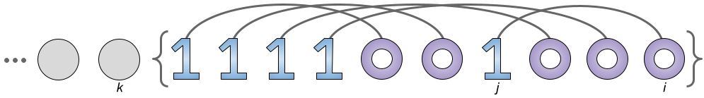

There is no value in carrying balls across the origin without depositing them into the warehouse, therefore, collecting the balls with positive coordinates $$$\mathbf{X_i}$$$ and those with negative coordinates are two similar but independent tasks. Hence, in what follows, we assume that $$$\mathbf{X_i}>0$$$ for all $$$i$$$. Moreover, let us assume that the balls are sorted in ascending order by $$$\mathbf{X_i}$$$.
A solution to the problem consists of a number of passes or round-trips from the origin and back with one or two balls collected in each pass. The time required to collect a single ball $$$i$$$ in a pass is $$$2\mathbf{X_i}$$$. The time required to collect two balls $$$i$$$ and $$$j$$$ is $$$2\times\max(\mathbf{X_i},\mathbf{X_j})$$$ if the balls are of different shapes and $$$2\times\max(\mathbf{X_i},\mathbf{X_j})+\mathbf{C}$$$ otherwise. We say that two balls $$$i$$$ and $$$j$$$ are matched (and write $$$(i,j)$$$) if they are collected in the same pass. Since the order of passes is not affecting the overall time for collecting all balls, we can equivalently think of the problem as one of finding an optimal matching of balls.
The following observation will be useful throughout the analysis.
Observation 1: Suppose we want to collect the first $$$i$$$ balls ($$$i \ge 2$$$) and $$$\mathbf{S_i} \neq \mathbf{S_{i-1}}$$$. In an optimal matching, the $$$i$$$-th ball is matched with the $$$(i-1)$$$-th ball.
Proof: Consider any matching of balls, where $$$i$$$-th ball is not matched with
$$$(i-1)$$$-th ball, and assume that $$$i$$$-th ball is a $$$0$$$.
1. If none of the two balls is matched, we can match the balls and save $$$2\mathbf{X_{i-1}}$$$ seconds.
2. If there is a matching $$$(i-1,j)$$$, $$$j \lt i-1$$$, and $$$i$$$-th ball
is not matched, then we can match $$$(i-1)$$$-th ball with $$$i$$$-th ball instead and save at least
$$$2\times(\mathbf{X_{i-1}}-\mathbf{X_j})$$$ seconds ($$$2\times(\mathbf{X_{i-1}}-\mathbf{X_j})+\mathbf{C}$$$, if $$$j$$$-th ball is
$$$1$$$-shaped).
3. Similarly, if there is a matching $$$(i,j)$$$, $$$j \lt i-1$$$, and
$$$(i-1)$$$-th ball is not matched, we can match $$$i$$$-th ball with $$$(i-1)$$$-th ball instead
and, again, save at least $$$2\times(\mathbf{X_{i-1}}-\mathbf{X_j})$$$ seconds.
4. Lastly, if there are matchings $$$(i,j)$$$ and $$$(i-1,k)$$$, $$$j \lt i-1$$$ and
$$$k \lt i-1$$$, then we can rearrange the matchings as $$$(i,i-1)$$$ and $$$(j,k)$$$ saving
at least $$$2\times(\mathbf{X_{i-1}}-\max(\mathbf{X_j},\mathbf{X_k}))$$$ seconds.
Observation 1 helps us match the balls if the last two balls have different shapes. But what if they have the same shape, say a $$$0$$$?
Observation 2: Suppose we want to collect the first $$$i$$$ balls ($$$i \ge 2$$$) and
$$$\mathbf{S_i}=\mathbf{S_{i-1}}=0$$$. There is an optimal matching of balls such that one of the
following conditions holds:
1. The last two $$$0$$$-shaped balls $$$i$$$ and $$$i-1$$$ are matched.
2. There is a matching $$$(i,j)$$$ with $$$\mathbf{S_j}=1$$$ and, for all $$$k \in [j+1,i]$$$, $$$\mathbf{S_k}=0$$$.
In other words, $$$i$$$-th ball is matched with the nearest $$$1$$$-shaped ball on its left.
3. There are no $$$1$$$-shaped balls and $$$i$$$-th ball remains unmatched.
Proof: The full proof is a lengthy case analysis, which we omit here. The idea is that matching $$$i$$$-th ball with the rightmost ball of a particular shape is generally at least as good as matching with another ball of that shape. For example, suppose that $$$i$$$-th ball is matched with a $$$1$$$-shaped ball $$$l$$$ such that there is another $$$1$$$-shaped ball $$$j$$$ with $$$l \lt j \lt i$$$. If the ball $$$j$$$ is unmatched, we can match the ball $$$i$$$ with $$$j$$$ instead and save $$$2\times(\mathbf{X_j}-\mathbf{X_l})$$$ seconds. Otherwise, if the ball $$$j$$$ is matched with some other ball $$$k$$$, we can swap the roles of balls $$$l$$$ and $$$j$$$ and create the matchings $$$(i,j)$$$ and $$$(k,l)$$$ obtaining the same overall time (if $$$k \gt j$$$) or better.
This means that we can try matching the last $$$0$$$-shaped ball with the $$$0$$$-shaped ball before or the rightmost $$$1$$$-shaped ball (if any), and at least one of these moves will be optimal.

The two observations lead to a dynamic programming solution. Let $$$dp[i][j]$$$ be the optimum time to collect the first $$$i$$$ $$$0$$$-shaped balls and the first $$$j$$$ $$$1$$$-shaped balls. The base case is $$$dp[0][0]=0$$$. For $$$i+j>0$$$, suppose again that the rightmost of these $$$i+j$$$ balls is $$$0$$$-shaped and it has the coordinate $$$x$$$. The case when the rightmost ball is $$$1$$$-shaped is symmetric. To eliminate some other corner cases, $$$dp[1][0]=2x$$$, $$$dp[i][0]=\min(dp[i-1][0],dp[i-2][0]+\mathbf{C})+2x$$$ for $$$i \ge 2$$$, and $$$dp[1][j]=dp[0][j-1]+2x$$$ for $$$j \ge 1$$$. For the general case with $$$i \ge 2$$$ and $$$j \ge 1$$$, if the penultimate ball is $$$1$$$-shaped, then $$$dp[i][j]=dp[i-1][j-1]+2x$$$ (Observation 1). Otherwise, we can choose to match the last $$$0$$$-shaped ball with the previous $$$0$$$-shaped ball or the rightmost $$$1$$$-shaped ball (Observation 2), namely, $$$dp[i][j]=\min(dp[i-2][j]+\mathbf{C},dp[i-1][j-1])+2x$$$.
The final answer is $$$dp[N_0][N_1]$$$, where $$$N_0$$$ and $$$N_1$$$ denote the total number of $$$0$$$-shaped and $$$1$$$-shaped balls, respectively. The time complexity of this algorithm is $$$O(\mathbf{N}^2)$$$.
Using dynamic programming from a different angle, we can solve the problem in linear time, apart from the initial sorting. Let $$$dp[i]$$$ be the optimum time to collect the first $$$i$$$ balls. As the base cases, $$$dp[0]=0$$$ and $$$dp[1]=2\mathbf{X_1}$$$. To calculate $$$dp[i]$$$ for $$$i \ge 2$$$, suppose once more that the $$$i$$$-th ball is $$$0$$$-shaped. If the $$$(i-1)$$$-th ball is $$$1$$$-shaped, we can match the last two balls and $$$dp[i]=dp[i-2]+2\mathbf{X_i}$$$ (Observation 1). Otherwise, using Observation 2, we have the options to match the last two $$$0$$$-shaped balls and collect all balls in $$$dp[i-2]+\mathbf{C}+2\mathbf{X_i}$$$ seconds, or to match $$$i$$$-th ball with the rightmost $$$1$$$-shaped ball $$$j$$$. The dynamic programing recurrence is not obvious in the latter case, though, as we do not know the optimum matching for the first $$$i-1$$$ balls except for ball $$$j$$$. What happens to the $$$0$$$-shaped balls in-between $$$j$$$ and $$$i$$$? We are missing another key observation here.
Observation 3: If there is an optimal matching of the first $$$i$$$ balls such that the $$$0$$$-shaped ball $$$i$$$ is matched with the rightmost $$$1$$$-shaped ball $$$j$$$ and $$$i-1 \neq j$$$, then the $$$0$$$-shaped ball $$$i-1$$$ is not matched with another $$$0$$$-shaped ball.
Proof: Assume on the contrary that we have two pairs of matched balls $$$(i,j)$$$ and $$$(i-1,k)$$$, $$$k \lt i-1$$$, such that ball $$$k$$$ is $$$0$$$-shaped. These two matched pairs contribute $$$2\mathbf{X_i}+2\mathbf{X_{i-1}}+\mathbf{C}$$$ seconds to the overall matching cost. But then we can rearrange the matchings as $$$(i,i-1)$$$ and $$$(j,k)$$$ costing us only $$$2\mathbf{X_i}+\mathbf{C}+2\times\max(\mathbf{X_j},\mathbf{X_k})$$$ seconds, which is $$$2(\mathbf{X_{i-1}}-\max(\mathbf{X_j},\mathbf{X_k}))$$$ seconds less. This contradicts the optimality assumption of the given matching.
It follows from Observation 3 that the $$$0$$$-shaped ball $$$i-1$$$ must be matched with another $$$1$$$-shaped ball, specifically the rightmost unmatched $$$1$$$-shaped ball. And we can extend this argument and repeatedly match $$$0$$$-shaped balls with $$$1$$$-shaped balls sweeping leftward for as long as there is another $$$0$$$-shaped ball to the right of a matched $$$1$$$-shaped ball. This process is ilustrated in the drawing below.

Let $$$k$$$ be the rightmost unmatched ball after the above $$$0$$$-$$$1$$$ matching process. There are no shape changes in the set of balls $$$\{k+1,k+2,\ldots,i\}$$$ and the cost of collecting those balls is twice the sum $$$X_\mathrm{0-shaped}(k+1,i)$$$ of $$$x$$$-coordinates of $$$0$$$-shaped balls in $$$\{k+1,k+2,\ldots,i\}$$$. Therefore, the cost of collecting all $$$i$$$ balls in this way is $$$dp[k]+2\times X_\mathrm{0-shaped}(k+1,i)$$$.
$$$X_\mathrm{0-shaped}(k+1,i)$$$ can be calculated in $$$O(1)$$$ time using prefix sums. But how do we get the index $$$k$$$ efficiently without actually carrying out the matching process? Note that $$$k$$$ is the largest index such that $$$k \lt i$$$ and the set $$$\{k+1,k+2,\ldots,i\}$$$ contains equal number of $$$0$$$-shaped and $$$1$$$-shaped balls. Consider the balance $$$b_i$$$ of 0/1 balls at each index $$$i$$$, namely, $$$b_i=z_i-o_i$$$, where $$$z_i$$$ and $$$o_i$$$ is the number of $$$0$$$-shaped and $$$1$$$-shaped balls in the set $$$\{1,2,\ldots,i\}$$$. The set $$$\{k+1,k+2,\ldots,i\}$$$ has equal number of $$$0$$$-shaped and $$$1$$$-shaped balls if and only if $$$b_k=b_i$$$. The index $$$k$$$ can be looked up in $$$O(1)$$$ time if we maintain a hash-table of indices, when each balance was last registered. If the current balance $$$b_i$$$ is seen for the first time, it means that there are not enough $$$1$$$-shaped balls to match all $$$0$$$-shaped balls with, and we can choose $$$k=0$$$.
We are performing a constant number of operations at each index in this approach, so the overall time complexity is dominated by the sorting, thus $$$O(\mathbf{N} \log \mathbf{N})$$$.